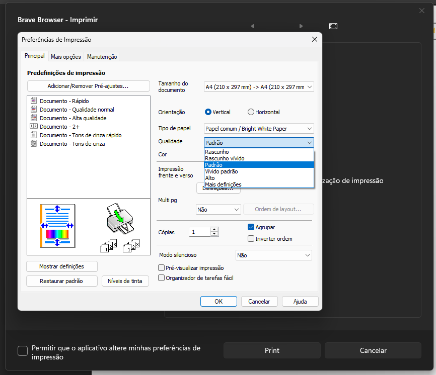

O diretório atual não traz capturas da instalação. O fluxo abaixo resume a instalação correta.
1
Abrir o instalador
Baixe o driver, execute o instalador e aceite os termos.
2
Escolher a conexão
Selecione Wi‑Fi para rede escolar ou USB para uso local.
3
Selecionar a impressora
Escolha a Epson L3250 Series e conclua com página de teste.
1
Selecionar a Epson
Abra a impressão e escolha a Epson L3250.


2
Abrir preferências
Defina páginas e abra o diálogo do sistema para acessar a aba principal da Epson.


3
Frente e verso, agrupar e qualidade
Agrupar mantém cada prova completa e ordenada.
Ajuste orientação, cores, frente e verso manual, qualidade e ajuste à página.
